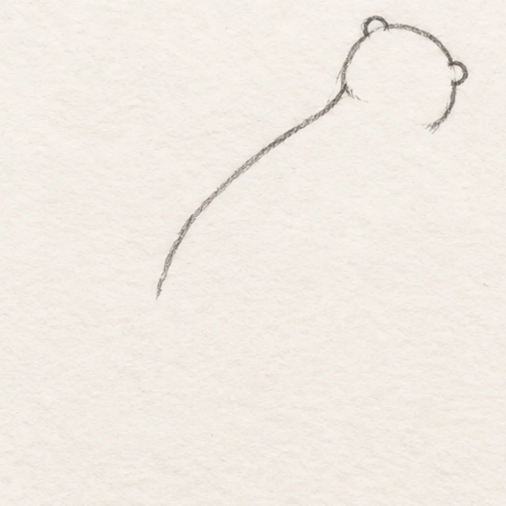
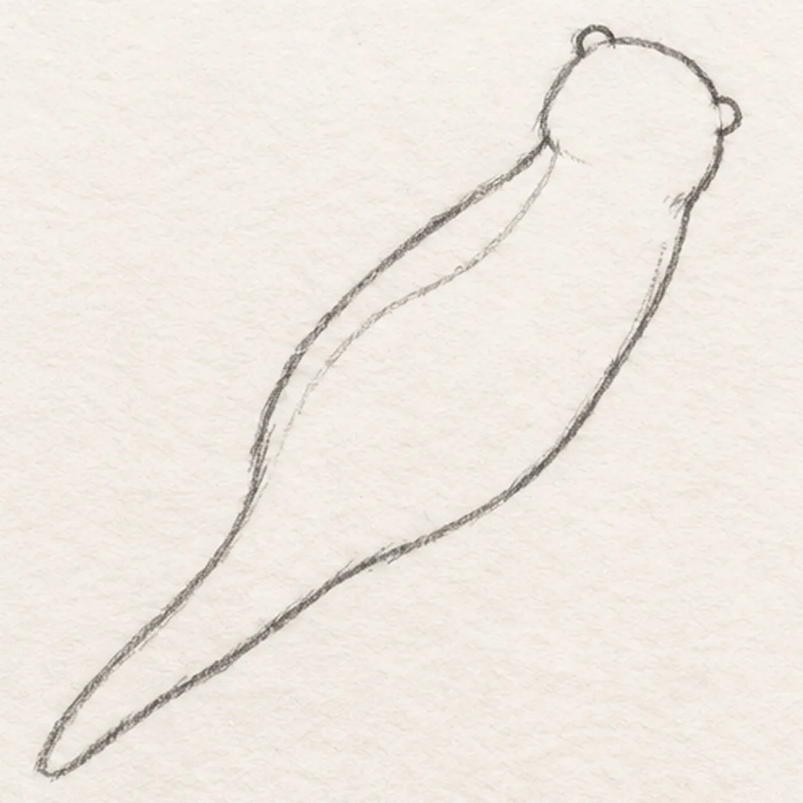
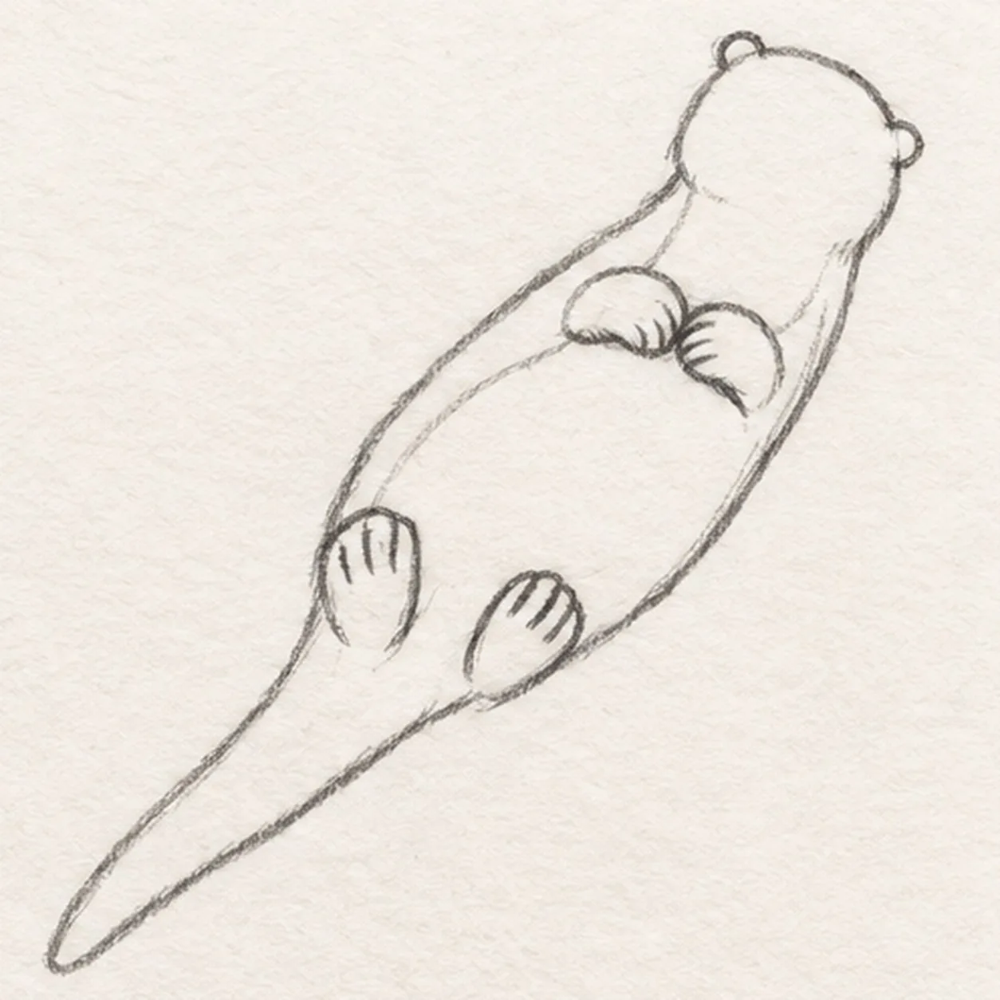
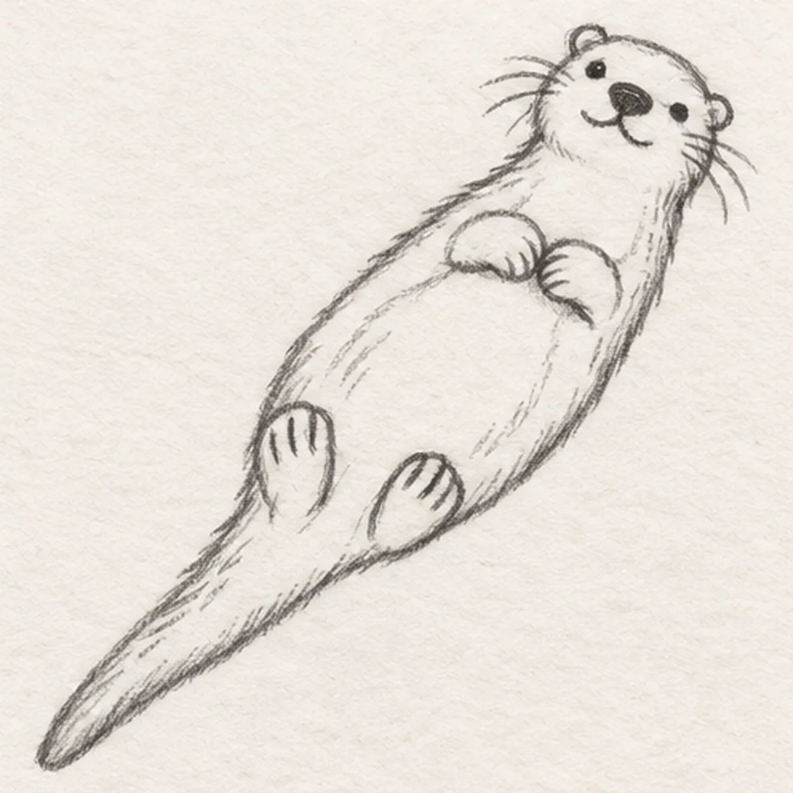
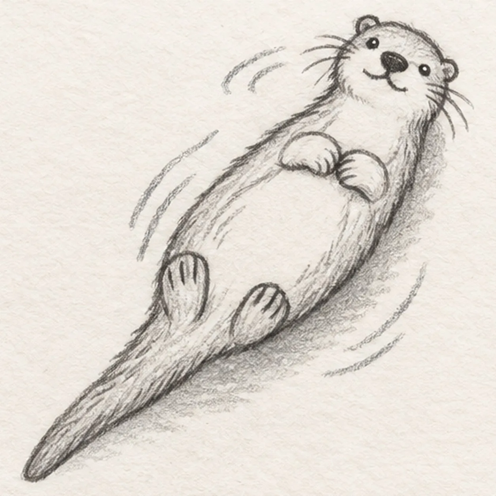

From the archive
Let's draw an otter
Treat this as one small practice round: build the subject lightly, notice the shapes, then darken only the lines that help the finished sketch.
-
01

Set the floating head and back
Near the upper right, draw one rounded head with two small ear bumps. From behind the lower ear, sweep one relaxed back curve diagonally toward the lower left and stop where the tail will begin.
Sketch tip: Ghost the long back curve twice before touching down. Its diagonal sets the drift, so leave plenty of open page around it.
-
02

Close the body and tail
Start under the chin and bow a broad belly curve down-left, keeping the middle roomy. Join it to one tapering tail that continues from the back curve and ends in a soft point, then add a pale inner belly boundary from the chest toward the tail base.
Sketch tip: Compare the empty strip between the outer body and pale belly boundary. Let both curves narrow toward the same tail base.
-
03

Rest all four paws
Place exactly two small forepaws touching over the middle of the belly. Attach two rounded hind paws near the lower body, then add three short toe marks inside each hind paw.
Sketch tip: Keep the forepaws close and the hind paws wider apart. Count four paws and three toe marks on each hind paw before moving on.
-
04

Add the otter face and fur
Add two small eyes, one dark rounded nose, and a short mouth seam. Pull exactly three whiskers from each cheek, then add a few short fur strokes at the cheeks, chest, body edge, and tail without moving the pale belly boundary.
Sketch tip: Aim every whisker away from the muzzle in one relaxed stroke. Keep the eyes small so the broad nose stays the facial anchor.
-
05

Float it on the river
Draw exactly three broken ripple groups around the body without crossing the paws or tail. Shade one soft broken shadow beneath the otter, then preserve one tiny open-paper highlight inside each eye.
Sketch tip: Curve each ripple around the otter instead of across it. Use the side of the pencil for a soft shadow and keep the water mostly white paper.
-
06

Color the drifting otter
Layer warm-brown pencil over the coat, pale tan inside the established muzzle and belly boundary, cool gray through the existing shadow, and pale blue over the same three ripple groups. Keep graphite and paper tooth visible and add no new contours.
Sketch tip: Pull brown strokes along the body and tail. Stop while the pale belly, eye glints, and loose graphite still make the sketch feel light and attainable.

![Handmade graphite and restrained colored-pencil sketch of one side-view praying mantis angled upward on a warm-brown twig with one pale-olive thorax, one tapered abdomen, one triangular head, exactly two long antennae, one dark near eye with a paper highlight, one visible folded grasping foreleg with inner spines, exactly four long walking legs touching the twig, one muted-green folded wing, exactly three exposed abdomen bands, exactly two attached green leaves, visible paper tooth, and one broken graphite shadow](../assets/praying-mantis-on-a-twig-finished-v1.webp)
![Handmade graphite and restrained colored-pencil sketch of one open warm-cream crayon box in three-quarter view with muted-coral side panels, exactly five crayons rising at varied heights in red, orange, golden yellow, teal, and blue, one pointed tip per crayon, exactly one dark wrapper band per crayon, exactly two outward carton flaps, one blank oval front label, exactly two short front seams, exactly three small wear nicks, exactly two open-paper wrapper highlights, visible paper tooth, and one broken cool-gray ground shadow](../assets/open-box-of-five-crayons-finished-v1.webp)